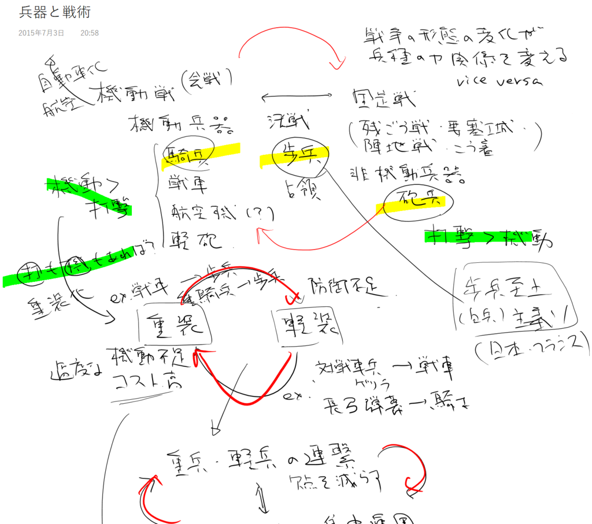

『兵器と戦術の世界史』
公開日：
")
- 作者: 金子常規
- 出版社/メーカー: 中央公論新社
- 発売日: 2013/10/23
- メディア: 文庫
- この商品を含むブログ (4件) を見る
読んで気になったのは、用語の一部がやたら古風な表記になっているのこと。ペリー提督がペルリだったり。不思議に思って途中からあとがきや奥付を見ると、1979年刊の絶版本を復刊したものらしい。生まれる前の本じゃないか、道理で古いわけだ。施条（ライフリング）を「腔綫」と呼ぶのなども、恥ずかしながら初めて目にしたかも。「滑腔（非施条）」と対比するならこっちの用語の方が適切ではあるな、などとどうでもよいことを思った。
しかし、文体は決して古びておらず、内容も古臭くない。古風な用語と、今ではごくあたりまえな“少数精鋭主義”への展望を述べたところで筆をおいている点がなければ*1、最近刊行された本だと言われても疑問に感じなかっただろう。Amazon で「読みにくい文体だ」という評価が多いけれど、それは日頃から論文系の著作に触れておらず、慣れていなかっただけではないかと思う。もしくは、前提とされる世界史の知識が少し多めであるにもかかわらず、とくに解説もなくサラッと話が進んでいくためではないか。
さて、肝心の内容だが。
古今東西の戦争を取り上げながら、当時の新兵器がどのように運用へ影響を与えたか、また、逆に新しい運用がどのように既存の兵器へ影響を与えたかが述べられていて、とても面白かった。
ただ、“世界史”と言う割に日本の戦争の話題が少し多めだったのと、著者が特科（自衛隊用語。所謂、砲兵）出身であるからか、若干砲兵に偏った内容だった。あと、航空機のインパクトについてはあまり触れられていない（核兵器については前書きで除外が明言されているので不満はない）。あくまでも“野戦”または“攻城戦”がメインになるのかなと思う。
あと、もう少しだけ文句を言わせてもらえれば、もっと大胆に議論を抽象化してもよかったと思う。事例は豊富で、その前後の関連においては変化の理由付けがちゃんとあるが、もっと巨視的な視点でのまとめがあれば分かりやすかったのではないかなーと思う。
――というわけで、自分でもちょっと考えてみた。

機動戦と固定戦
まず、その時々でどのような戦争の形態が主流であるかは、どの兵科をどのように運用すべきかに大きな影響を与えると感じた。そこで、思い切って戦争を2つの形態に分けてみようと思う。
一つは、機動戦。おもに平原で、互いに自由に軍を指揮して戦う会戦形式の戦争においては、相手の弱点を突くための機動力がモノを言う（もちろん、パッと見て相手の弱点が分からないようでは宝の持ち腐れだが！）。この戦いでの花形は騎兵だ。かのアレクサンドロスは「戦争は激動である。激動に始まり、激動に終わる」っぽいことを言ったらしいが（記憶が曖昧だ）、彼などは機動戦の名将なのだろう。あと、世界を制覇したモンゴル族なども機動戦を能くした民族だったのではないだろうか。
しかし、戦争は何も機動戦だけではない。陣地・要塞を巡る攻防や、ちょっと前で言えば塹壕戦などにおいては、騎兵は無用の長物だ。むしろ弓兵や砲兵のような、機動力には若干欠けても、射程・打撃を重視の兵科が活躍するだろうと思う。こうした形態の戦争を表す的確な言葉を僕は知らないが、ここでは固定戦としておく。
固定戦は何も攻城戦だけで見られるものではない。野戦でも局所的に固定戦を作り出すことは可能だ。この戦術に長けていたのは、ローマの軍団兵だろう。彼らはよく統御されており、戦術眼のある指揮官さえいれば、敵を自在に足止め・分断・包囲し、固体戦闘力では優る騎兵の集団をも殲滅した。織田信長が馬防柵で武田の騎馬隊（実質は歩騎共同部隊）を足止めし、火縄銃の一斉射撃で殲滅したのも、局所的固定戦を創出する戦術の一つかもしれない。彼が武将として真に偉大な点は、桶狭間で日本史上最高レベルの完璧な起動戦を演じておきながら、その先例に固執することがなかった点だろう。その場が機動戦と固定戦であるかを見極め、手持ちの兵科をうまく使い分けた（ときには使い混ぜた）のが成功の元になったのではないだろうか。
ちなみに、歩兵は機動戦であれ、固定戦であれ、もっとも調達・維持コストが安く、運用も容易な基本兵科だった。また、「砲兵が耕し、歩兵が占領する」とも言われたように、たとえ強力な騎兵・砲兵が敵を打ち砕いたとしても、最後にその土地を占領・維持するのは歩兵に頼るほかなく、必須の兵科でもある。
国力の低い国は、戦略的・戦術的要請に関わらず、軍隊を歩兵中心で構成する必要に迫られることも少なからずある。しかし、ローマの軍団兵の例にもあるように、歩兵は高い練度と強靭な精神、そして戦術次第でより強力な兵科を組織的に倒すことも不可能ではない。だからといって他の兵科を疎かにすると、かつてのフランスや日本のような白兵至上主義に陥ってしまう。
なお、ややこしくなるから槍兵については延べなかったが（歩兵をさらに細分・分析する必要がある）、本書の続編『兵器と戦術の日本史』が面白かったので、その感想を書くときに触れようと思う。実を言うとこれを書き始めてから、“兵器の有効攻撃距離（レンジ）”でまとめたほうがよかったのかなぁ、とちょっと後悔してる。この二つの分類はあまりイケてないかも。
軽装兵と重装兵、コストの相剋
さて、それはともかく。
機動戦と固定戦のうち、とりあえず機動戦（野戦、会戦）だけを考えてみると、攻撃力マシマシ、防御力ガチガチなのが強いだろうというのは素人でもわかる。歩兵よりも騎兵、歩兵ならば軽装歩兵より重装歩兵、騎兵でも軽騎兵より重装騎兵の方が強そうだ。実際、それらの重装兵種は古代・中世では戦場の華だった。
しかし、あまりに行き過ぎた重装化は足を掬われる結果に陥りがちだ。密集形態（ファランクス）は脇が弱い上に方向転換が難しく、より柔軟な運用が可能なローマの軍団（レギオン）の前に敗れた。ローマのレギオンのあとは再び騎兵の時代になったが、その極致ともいえるフランスの重装騎兵は、馬を狙われて落馬すると、二度と起き上がれなかったという。実際の戦場では駈歩も難しく、肝心の打撃力も実際のところは怪しかったろう。
そもそも、戦争にかけられる国力というものには限りがある。ちゃんとキルレシオやシナジーなんかも考えながら、まんべんなく育成していかなければならないのが実際のようだ。
防御・打撃・機動、単一兵科の集中利用と複数兵科の協同利用
以上みてきたように、戦場ではさまざまな要素が相生相剋な関係になっていて、時代や地域によって目まぐるしく取って代わっている。しかし、基本的な要素は打撃・防御・機動（射程も考えた戦略的・戦術的有効打撃範囲とした方がいいかもしれない）の三要素で説明がつくようにも感じる。
この3要素をすべて備えていれば、戦場では理想だろう。しかし現実的にはそう簡単ではない。
たとえば戦車は前述の3要素を高いレベルで調和させているが、決して万能の兵器というわけでもない。一般的にこの三要素すべてが必要とされるケースは少なく、たいていはどれか一つを諦めたり、また2つを捨てて一つの要素に特化すれば、より少ないコストで大きな効果が得られる場合が多いからだ。戦車の場合、市街戦で機動力を封じられれば、そこにかけたコストの分割高になる。うまく隠蔽した砲兵陣地が機能するならば、戦車に比べて機動・装甲にコストをかけていない分、割安で強力な打撃力になる。
要は、その場その場でどの要素が必要、または優先度が高いかだ。
もちろん、想定されるケースは膨大なので、それに手広く対応できるようにさまざまな兵種を万遍なく揃えておく必要がある。これは平時の開発・育成も含めた戦略的なリソース配分の問題だが、いざ戦時になればそれをどのように運用するかという戦術的なリソース配分が重要になる。
たとえば、アレクサンドロス大王は防御・攻撃を担うファランクスの弱点を軽歩兵の支援で補い、打撃と機動を担う騎兵でトドメを刺した。複数兵科の協同利用でリードを奪い、防御が必要なフェーズが過ぎると（もしくは防御が不要な状況・局面を見出すと）、打撃・機動を専らとした単一兵科・騎兵の集中利用でトドメを刺すやり方だ。
一方、ローマのレギオンは3つの要素を万遍なく高いレベルで満たしていたが、それでも共和政時代はほとんど同盟国からの支援兵による助けを得て敵の組織的攻撃力を削ぎ、訓練された機動力とリーチの短いグラディウスが活きる局所的機動戦を演出する必要があった。騎兵は弱体で、おもに偵察に使われたようだが、それでも同盟国の援兵にガリアやモウリタニアの強力な騎兵の参加が期待できる場合、いつものやり方に固執しない優秀な指揮官であればそれを活かした戦いをしたようだ。アレクサンドロス大王のやり方をくらべると柔軟だが、結果は指揮官の能力と個性に左右されてしまうかもしれない。
最後に、グリボーバル・システム - Wikipedia のような兵器・軍団の規格化も、戦時の運用では力を発揮するらしいということを付け加えておく。受験で世界史のお勉強をすると、勃興する民族について学ぶとき、まず十伍だのケントゥリアだの千戸だの八旗だのという社会の組織化が触れられるが、そういうのも“規格化”の一種なのかもしれない。当然、そういうもののない民族よりも柔軟な戦術的運用が可能だろう。
戦争技術の共進化による爆発的な発展に備える
あと、最後に忘れてはいけないのは、兵器と言うのはときに爆発的に進化するということ。
一番よい例が、第一次世界大戦のあと、フランスが戦車の能力を見くびっていたことだろう。悲劇的なことに、フランスは戦車などたいしたことがないと思っていたので、そのアンチ兵器である対戦車砲の研究も怠っていた。なのでドイツの機甲師団がやってきたとき、フランスにはそれに対抗する戦車どころか、対戦車砲すらもなかったのだ。戦車を軽視すれば対戦車砲も生まれず、ましてや対抗方法の研究もなく、それ以外のカノン砲・榴弾砲などの派生研究でも後れを取ってしまう。かたやドイツでは戦車主体の用兵を研究し、優秀な装甲と砲を開発し、戦車の弱点を補うための航空戦力も充実させていた。戦争のやり方が劇的に進歩し、もはや取り返しのつかない差へと広がってしまったのだ。
このことは、一つの軽視がいくつもの致命的な結果へと連鎖していく好例だと思う。残念ながら、この例を見ても、日本が「非武装化」することは非現実的なのが分かるだろう。まさに“止まっているためには走り続けなければならない”と言うヤツだ。素人が「これは要らないんじゃない？」って思った瞬間に、次の戦争での敗北が確定してしまう！
さいごに
ここまで書いてなんだけど、このまとめにはいろいろ無理があった。戦争ってのは難しい。わしが巻き込まれたら、多分真っ先に死んじゃうわ。
*1:すでに先進国で徴兵制をとる国はない